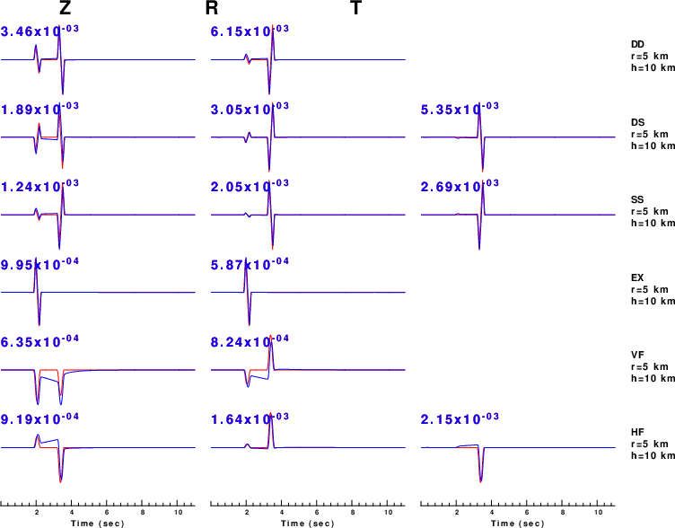
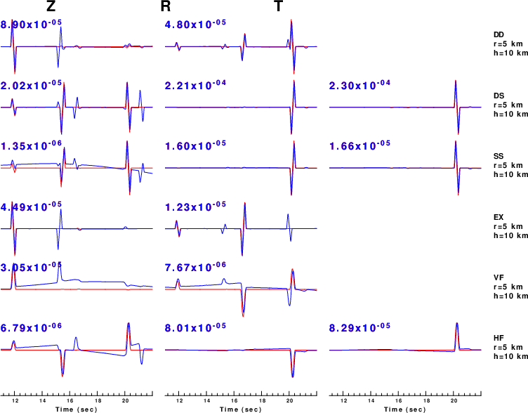

The purpose of this tutorial is to compare the Green's functions created by cpulse96 to thus created by wavenumber integrations. The comparison must include rays laving the source in both upward and downward directions. In addition the test must avoid the Rayleigh wave which is not sythetized by the Cerveny high-freuqnecy asymptitoc ray theory. A simple crustal model with thickness of 40 km is used. Thus the selected epicentral distance is r=5 km and the source depth is h=10 km.
First download CERVHSPEC.tgz and then
gunzip -c CERVHSPEC.tgz | tar xf - cd CERVHSPEC DOALL
This will create the two figures shown below.
Because the reflections from the base of the crust will be of much lower amnplitude sue to a grater vertical propagation distance, e.g., 70 km vs 10 km, and also because the reflections will be sub-critical, the trace comparison si presented in two windows, 0 - 11 sec and 11-22 sec in the fillowing two figures.
|  Green's function comparison in the 0-11 sec time window. Red traces are computed using Cerveny's code; the blue traces are comptued using wavenumebr integration code. |
The column give the component of motion while the row gives the result for a particular Green's function. This the first row compars the ZDD and RDD Green's functions. There is no TDD Green's function.
|  Green's function comparison in the 11-22 sec time window. Red traces are computed using Cerveny's code; the blue traces are comptued using wavenumebr integration code. |
One obvious difference is apparent in the vertical Force (VF) and Horizontal force (HF) Grene's functions. Int he 0-11 sec display, the wavnumber integration code contains the near field terms, which are not present in the ray theory code. The lower frequency signal in the ZSS comparison in the 11-22 sec window can be reduced by increasing the value used in the -MF option in hprep96 in HSPEC/DOIT. The reason that there is a difference in waveforms at a travel time of about 15s is because, the invocation of cprep96 in CERV/DOERV only incuded the direct rays from the source to the surface receiver and the downgoing rays, e.g., P, S, PmP, PmS, SmP and SmS. The ray description do not include the surface reflectiosn, e.g., pPmP etc.
The excellent comparison shows that the implementation within cpulse96 is correct.